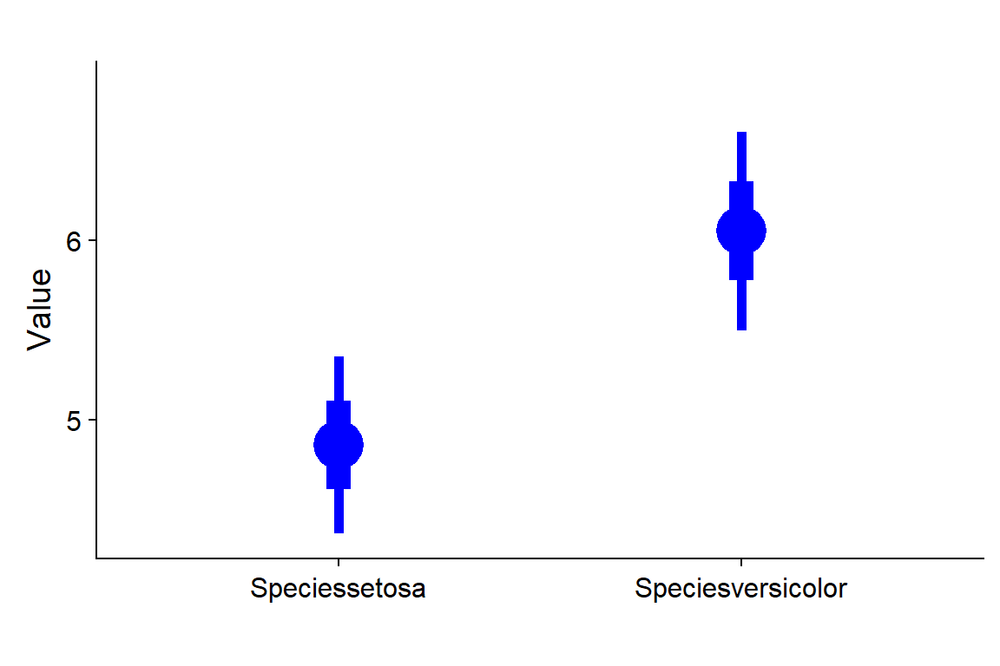

Chapter 14 “Error Bars”
Commentary
“…the standard deviation is a measure of the variability of a set of observations, whereas the standard error is a measure of the precision of an estimate…in relation to its unknown true value.” (Altman 1980 “Statistics and ethics in medical research VI: Presentation of results”. BMJ)
Vocabulary
Motulsky vocab
Aditional vocab
Key functions
Chapter Notes
14.1 [ ] “SD VERSUS SEM”
14.1.1 [ ] “What is the SD”
[ ] The standard deviation is a measure of variability. The larger the standard deviation is, the more variation there is within a sample. When variation is large within a sample, its likely that there is lots of variation within the population that was sampled. The standard deviation does not directly inform your opinion about the sample mean.
The SD in Excel
In Excel they distinquish between the population standard deviation, STDEV.P(), and the sample standard deviation, STDEV.S(). In practice you almost never are working with a population.
The SD in R
The standard deviation is calcualted in R using the function sd()
some.data <- c(1,4,5,6)
sd(some.data)## [1] 2.160247The standard deviation is the square root of the variance.
# the variance of some.data
var(some.data)## [1] 4.666667#square root of the variance of some.data
sqrt(var(some.data))## [1] 2.160247#the standard deviation = the square root of the variance
sd(some.data) == sqrt(var(some.data))## [1] TRUE14.1.2 [ ] “What is the SEM?”
14.1.3 [ ] “The SEM does not quanitfy variablity among variables”
14.1.4 [ ] “The SEM quantifies how precisely you know the population mean”
[ ] Challenge question: how would you describe the difference between the population mean and the same mean?
[ ] SEM Summary
“The standard deviation (often SD) is a measure of variability. When we calculate the standard deviation of a sample, we are using it as an estimate of the variability of the population from which the sample was drawn … So, if we want to say how widely scattered some measurements are, we use the standard deviation. If we want to indicate the uncertainty around the estimate of the mean measurement, we quote the standard error of the mean.” Altman (2013)
standard error of the mean (SEM) or just standard error (SE) is a measure of precision. The standard error does not tell you anything about variation in your sample or the population. The standard error tells you about how precisely you have estimated your mean (Note that standard errors can also be calcualted for other things.) A large standard error means the mean has been estimately with low precision. A small standard error means that the mean has been estimate precisely. Precision is increased by either little variation in the population or a larger sample size.
14.1.5 [ ] “How to compute the SD from the SEM”
If you are given a SEM and sample size, you can back calculate the standard deviation. You should always make your same size clear for your statistical tests (or, equivalently, the degrees of freedom, which we’ll talk about later) so people can calculate the SD if they want it.
14.2 [ ] “WHICH KIND OF ERROR BAR SHOULD I PLOT”
14.2.1 [ ] “Goal: To Show the variation among the values”
14.2.2 [ ] “Goal: To show how precisely you have determined the population mean”
[ ] If this is your goal, you should just plot the 95% CI. Or better yet, plot both! I like plots like this
##
## Attaching package: 'coefplot'## The following objects are masked from 'package:arm':
##
## coefplot, coefplot.default, invlogit## Warning: Removed 1 rows containing missing values (geom_vline).
14.2.3 [ ] “Goal: To create persuaive propaganda”
“Because they are shorter than the 95% CI” is not a good reason to use SEM.
14.3 [ ] “THE APPEARANCE OF ERROR BARS”
I personally don’t like bar plots (eg right side of figure 14.1 on page 121) and see no reason not to just use a dot with error bars for the mean, and to include the raw data whenever possible.
For a middle of the road opinion on bar plot see Ben Bolker: “Dynamite plots: unmitigated evil?” http://emdbolker.wikidot.com/blog:dynamite
For people who realy don’t like them http://biostat.mc.vanderbilt.edu/wiki/Main/DynamitePlots
I think this sums up one of the main reasons barplots are bad: “bar graphs that boil down data points to a single mean often fail to convey the nuances of the numbers” https://www.nature.com/news/bar-graphs-criticized-for-misrepresenting-data-1.17383
I really don’t like barplots that only include the upper error bar (as in figure 14.2). I see no reason why you should do this.
14.5 “GEOMETRIC SD ERROR BARS” (SKIP)
14.6 [ ] “COMMON MISTAKES: ERROR BARS”
14.6.1 [ ] “Mistake: Plotting mean & error bar instead of plotting a frequency distribution”
For more on this see Weissgerber. 2015. Beyond Bar and Line Graphs: Time for a New Data Presentation Paradigm. PLoS. http://journals.plos.org/plosbiology/article?id=10.1371/journal.pbio.1002128&fullSite
14.6.2 [ ] “Mistake: Assuming that all distributions are Gaussian”
Pop quiz: Gaussian is the same as __________________
14.6.3 [ ] “Mistake: Plotting a mean & error bar w/o defining how the error bars were computed.”
A figure legend should always state what the error bars are. Even better, put an annotation within the plot itself.
14.7 [ ] Q&A
Further reading
The difference between SD and SEM are a perrenial topic. If things are clear check out one of these resources. Better yet, print one out an post in on your lab bulletin board - chances are other people are fuzzy on it too!
“Standard deviation versus standard error” http://thestatsgeek.com/2013/06/30/standard-deviation-versus-standard-error/
“Basic stats:Standard deviation vs Standard error” https://datascienceplus.com/standard-deviation-vs-standard-error/
Altman 2005. Standard deviations and standard errors BMJ 331 doi: https://doi.org/10.1136/bmj.331.7521.903 (Published 13 October 2005)
Klaus 2015. Statistical relevance—relevant statistics, part II: presenting experimental data. EMBO Journal. http://emboj.embopress.org/content/early/2016/07/18/embj.201694659?casa_token=h0I6nRzyLsYAAAAA%3AvvaeRts7NpFZwgiDctKC7z0qbvvd7OTJ1d-XgsW1mvg7BJPpOvVnTuwGNjLP0r1DWvbVJ9gGfkfqg6I
Cummings et al. 2007.
Error bars in experimental biology. Journal of Cell Biology. http://jcb.rupress.org/content/177/1/7.short
Munger 2007. Most researchers don’t understand error bars. Cognitive Daily. http://scienceblogs.com/cognitivedaily/2007/03/29/most-researchers-dont-understa/
Wullschleger et al. 2014. High Incorrect Use of the Standard Error of the Mean (SEM) in Original Articles in Three Cardiovascular Journals Evaluated for 2012. PLoS BIology. http://journals.plos.org/plosone/article?id=10.1371/journal.pone.0110364